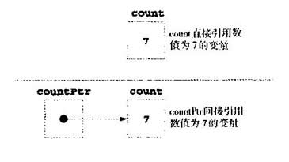
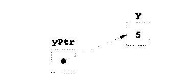

教学目标
●能够使用指针
●能用指针按引用调用向函数传递参数
●了解指针、数组与字符串之间的密切关系
●了解指针在函数中的使用
●能够声明和使用字符串数组
本章介绍“C++编程语言一个最强大的特性——指针。指针是C++中最难掌握的问题之一。第3章介绍了引用可以用于实现按引用调用。指针使程序可模拟按引用调用，生成与操作动态数据结构，即能够伸缩的数据结构，如链表、队列、堆栈和树。本章介绍基本的指针概念，而且强调了数组、指针与字符串之间的密切关系．并包括一组很好的字符串操作练习。
第6章介绍结构中的指针使用。第9章和第10章介绍如何用指针和引用进行面向对象编程。第15章介绍动态内存管理技术以及生成和使用动态数据结构的例子。
把数组和字符串看成指针是从C语言演变而来的。本书后面会介绍把数组和字符串当作成熟的对象。
指针变量的值为内存地址。通常变量直接包含特定值，而指针则包含特定值变量的地址。因此可以说，变量名直接(directly)引用数值，而指针间接(indirectly)引用数值(如图5．1)。通过指针引用数值称为间接引用。
指针和任何其他变量一样，应先声明后使用。下列声明：
int *countPtr， count;
声明变量countPtr的类型为int*(即指向整型值的指针)，或者说成 "countPtr是int的指针"或"countPtr指向整数类型的对象"。变量count声明为整数，而不是整型值的指针。声明中的*只适用于countPtr。
声明为指针的每个变量前面都要加上星号(*)。例如，下列声明：
float *xPtr，*yPtr；
表示xPtr和yPtr都是指向float值的指针。声明中以这种方式使用*时，它表示变量声明为指针。指针可以声明为指向任何数据类型的对象。
假设对指针的声明会分配到声明中逗号分隔的指针变量名列表中的所有指针变量名，从而将指针声明为非指针。声明为指针的每个变量前面都要加上星号(*)。

图5．1 直接和间接引用变量
指针应在声明时或在赋值语句中初始化。指针可以初始化为0、NULL或—个地址。数值为0或NULL的指针不指任何内容。NULL是头文件<iostream.h>(和另外几个标准库头文件)中定义的符号化常量。将指针初始化为NULL等于将指针初始化为0，但C++中优先选择0。指定0时，它变为指针的相应类型。数值0是惟一可以不将整数转换为指针类型而直接赋给指针变量的整数值。5．3节将介绍将变量地址赋给指针。
初始化指针以防止其指向未知的或未初始化的内存区。
&(地址)运算符是个一元运算符，返回操作数的地址。例如，假设声明：
int y = 5； int *yPtr；
则下列语句：
yPtr = &y；
将变量y的地址赋给指针变量yPtr。变量yPtr“指向”y。图5．2显示了执行上述语句之后的内存示
意图。图中从指针向所指对象画一个箭头．表示“指向关系”。
图5．3显示了指针在内存中的表示，假设整型变量y存放在地址600000，指针变量yPtr存放在
地址500000。地址运算符的操作数应为左值，(即要赋值的项目，如变量名)．地址运算符不能用于
常量、不产生引用的表达式和用存储类regtster声明的变量。
”*”运算符通常称为间接运算符(indirection operator)或复引用运算符(dereferencing operator)，
返回操作数(即指针)所指对象的同义词、别名或浑名。例如(图5．2再次引用)，下列语句：
cout << * yPtr << endl；
指向变量y的值(5)，如同下列语句：
cout << y << endl；

图5．2 指针指向内存中整数变量的示意图
这里使用*的方法称为复引用指针(dereferencing a pointer)。注意复引用指针也可以用于赋值语句左边，例如下列语句：
*yPtr = 9；
将数值9赋给图5．3中的y。复引用指针也可用于接收输入值，例如：
cin>> *yPtr；
复引用的指针是个左值。
yptr y
500000 600000 600000 5
图 5．3 指针在内存中的表示
如果指针没有正确地初始化或没有指定指向内存中的特定地址，则复引用指针可能造成致命的运行时错误，或者意外修改重要数据。虽然运行完程序，但得到的是错误结果。
复引用非指针是个语法错误。
复引用0指针通常是个致命的运行时错误。
图5.4的程序演示了指针运算符。本例中通过<<用十六进制整数输出内存地址(十六进制整数见附录“数值系统”)。
输出指针的格式与机器有关，有些系统用十六进制整数，而有些系统用十进制整数。
注意a的地址和aPtr的值在输出中是一致的，说明a的地址实际赋给了指针变量aptr。&和*运算符是互逆的，如果两者同时作用于aPtr，则打印相同的结果。图5．5显示了前面所介绍的运算符的优先级和结合律。
// Fig. 5.4: fig05_04.cpp
// Using the & and * operators
#include < iostream.h>
int main()
{
int a; // a is an integer
iht *aPtr; // aPtr is a pointer to an integer
a = 7;
aPtr = &a; // aPtr set to address of a
cout << "The address of a is "<< &a
<< "\nThe value of aPtr is" << aPtr;
cout << "\n\nThe value of a is "<< a
<< "\nThe value of *aPtr is" << *aPtr;
cout << "\n\nShowing that * and & are inverses of"
<< "each other.\n&*aPtr =" << &*aPtr
<< "\n*&aPtr =" << *&aPtr << endl;
return 0;
}
输出结果：
The address of a is Ox0064FDF4
The value of aPtr is 0x0064FDF4
The value of a is 7
The value of *aPtr is 7
Showing that * and & are inverses of each other.
&*aPtr = 0x0064FDF4
*&aPtr = 0x0064FDF4
图 5.4 &与*指针运算符
------------------------------------------------------------------------------
运算符 结合律 类型
------------------------------------------------------------------------------
() [] 从左向右 括号
++ -- + - static_cast() 从右向左 一元
& *
* / % 从左向右 乘
+ - 从左向右 加
<< >> 从左向右 插入/读取
< <= > >= 从左向右 关系
== != 从左向右 相等
&& 从左向右 逻辑AND
|| 从左向右 逻辑或
?: 从右向左 条件
= += -= *= /= %= 从右向左 赋值
, 从左向右 逗号
------------------------------------------------------------------------------
图 5.5 运算符的优先级和结合律